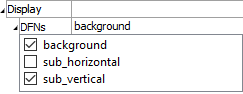
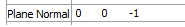
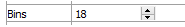
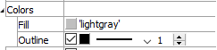
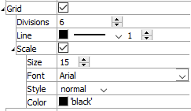
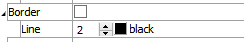
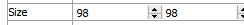

Fracture Rosette
Description
Fracture rosette chart (radial histogram of fracture orientations).
Attributes
Display
Set display off/on for distinct sets.
Display (checkbox on item name): Check an item in the list to include it in the display. Uncheck the item to hide it.
Plane Normal
Set the rosette chart orientation.
Plane Normal: The default orientation is horizontal, so the default plane normal is 0,0,1. Any arbitrary line of sight can be specified with this setting.
Bins
Set the number of bins in the histogram.
Bins: Set the number of angular ranges — bins — to use in the plot. The size of each bin is set to 360/Bins value.
Colors
Set bin coloring.
Colors: A container for the following settings.
Fill: Set the coloring of the bins.
Outline: Set the presence (checkbox), color, line style, and line width of the bin outline.
Grid
Set the attributes of the rendered rosette grid.
Grid: Display the grid if checked. This setting also contains the following.
Divisions: Set the number of divisions within the grid.
Line: Set the color, style, and thickness of the grid lines.
Scale: Include labeling to indicate scale when checked. This setting also contains the following.
Size: Set the size of the text for scale labels.
Font: Set the font face used for scale labels.
Style: Set the type style (normal, italic, bold, bolditalic) of text for scale labels.
Color: Set the text color.
Border
Set display of the plot item border.
Border: Display the border when checked. This setting contains the following setting as well.
Line: Set thickness and color of the line used to render the border.
Position

Set the plot item position.
Position: Specifies the bottom and left positions, respectively, of the item’s bottom-left corner, as a percentage of the available rendering area.
If these values are set such that, with the current size setting, the item would exceed the available rendering area, then the size will be automatically downwardly adjusted to fit. Also see the size attribute.
Size
Set the size of the plot item.
Size: Specify \(x\) and \(y\) size, respectively, of the item, as a percentage of the available rendering area. Also see the position attribute.
Legend
Set display of the item in the plot legend. All plot items, at minimum, have a Title attribute.
Legend: Show (checked) all information about the plot item in the legend.
Title: Show (checked) the title of the plot item in the legend. The “Alias:” field may be used to specify a custom title for the item.
Size: Set the size of text in the legend.
Font: Set the font face used for the text.
Style: Set the text style (the options are normal, bold, italic, bold-italic).
Color: Set the text color.
Beneath Title, the Fracture Rosette plot item also provides controls in the legend for Plane, Grid, and Bin. The sub-attributes of each are the same as those for Title.
| Was this helpful? ... | UDEC © 2018, Itasca | Updated: Mar 15, 2024 |